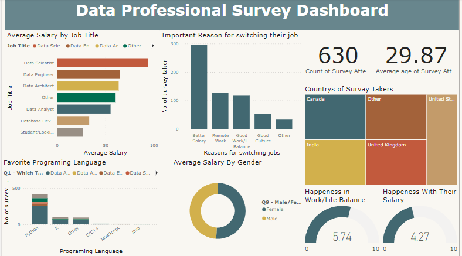

Power Bi Dashboard
Developed an interactive Power Bi dashboard to analyze survey data from data professionals. The project aimed to provide insights into industry trends, work/life Balance levels, and average salary. Designed an interactive dashboard with user-friendly visualization including bar charts, pie charts, etc…
Using DAX formula to perform complex calculations and derive meaningful insights from the survey data.